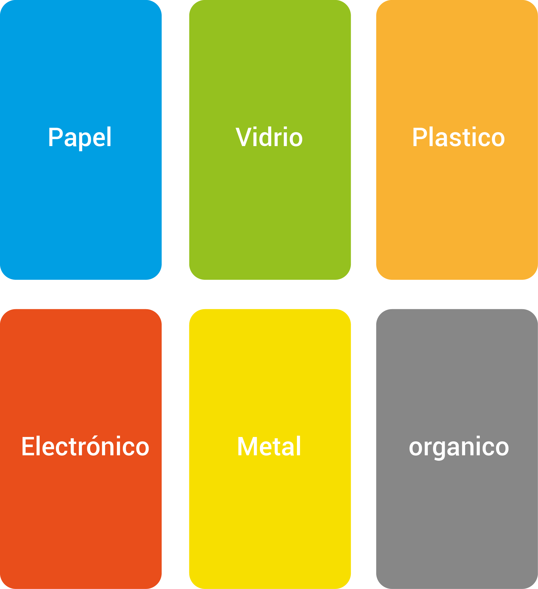

Compartimos contigo nuestros logros.
Nuestros avances.
Aquí puedes encontrar contenido multimedial sobre el desarrollo de la campaña.
En el tiempo que llevamos en funcionamiento hemos logrado hacer que la comunidad del barrio 20 de Julio reflexione sobre sobre su conducta al momento de manejar los resíduos sólidos, disminuyendo así la costumbre de desechar de forma incorrecta los resíduos sólidos.
Hemos enseñado a la comunidad la correcta clasificación de los resíduos a travéz de la paleta de colores que se ha estipulado para que se facilite la distinción entre cada uno de ellos.
